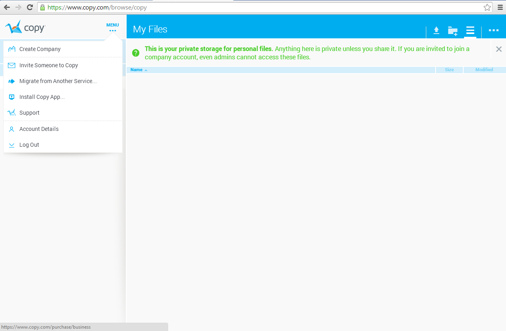
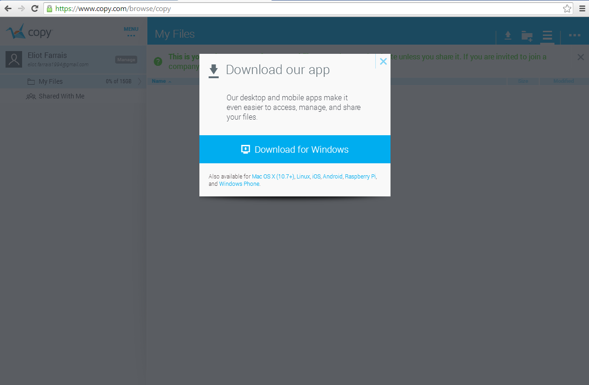
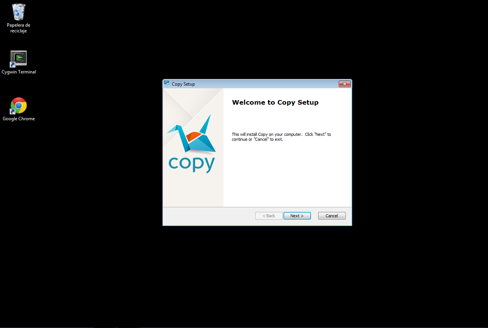
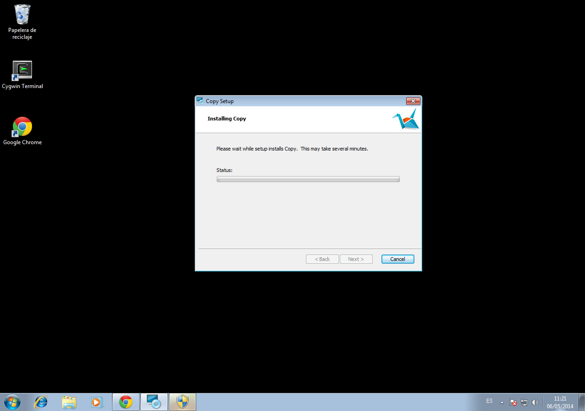
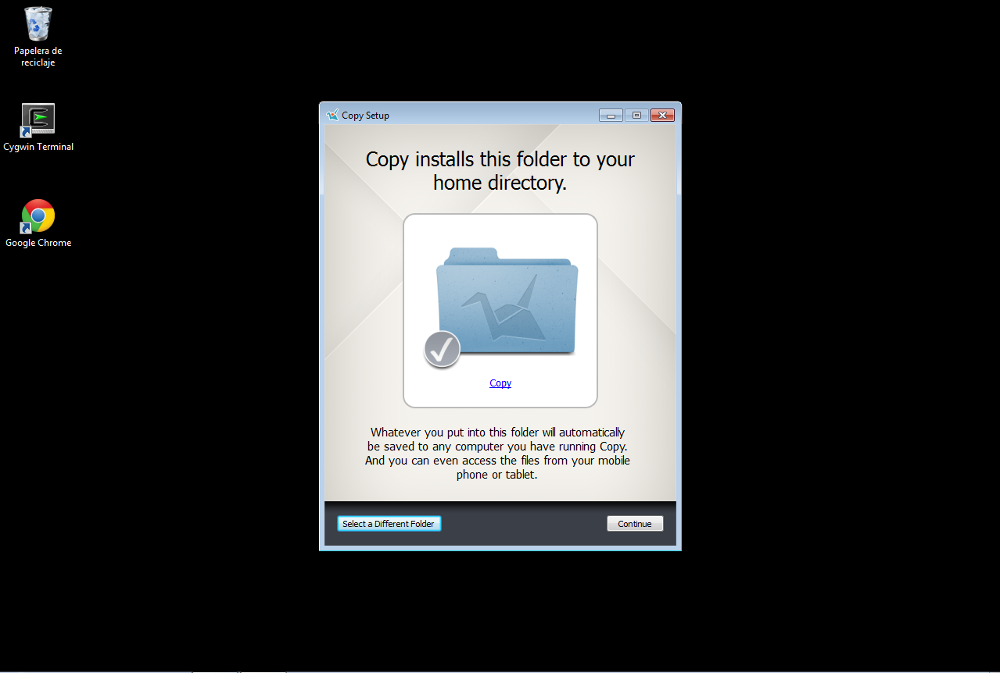

Para instalar Copy, accederemos a la pagina oficial y nos iremos a la ultima parte para registrarnos.
Pondremos nuestro nombre y nuestro correo electronico con el que deseamos registrarnos
Una vez registrados, nos sale la carpeta Copy de la cuenta que nos hemos creado. Para instalarnos la app vamos a Menu -> Install Copy app
Elejimos el sistema operativo, en nuestro caso Windows, y esperamos a la descarga
Ejecutamos el ejecutable. le damos a abrir y nos sale la ventana de instalación de Copy
Damos siguiente hasta que nos aparezca install. Una vez hecho esto empieza a instalarse, y al terminar pulsamos Finish
Damos siguiente hasta que nos aparezca install. Una vez hecho esto empieza a instalarse, y al terminar pulsamos Finish
Al terminar la instalación se nos abre Copy, el programa. Ponemos nuestro correo con el que nos registramos y la contraseña.
Una vez terminamos pulsamos Login
En esta parte de la configuración hacemos clic en la parte de "Select a different folder"
Creamos una carpeta en el sistema, la cual es usada por copy para copiar esos datos en la Nube.
En nuestro caso será creada en el escritorio. Una vesz hecho, clic en Aceptar-> Continue
Aquí selecionaremos en "Choose File to sync..." los archivos o carpetas personales que no queremos que se suban a la nube.
En nuestro caso haremos caso omiso y le daremos a Continue
Aquí ya tenemos nuestra carpeta Copy sincronizada a la nube.
Si nos fijamos en la esquina inferior derecha, nos sale el icono del programa con el uso de GB que le hemos hecho a la carpeta
15 GB de espacio
Instalación sencila
fácil configuración
Multiplataforma
Idioma solamente en ingles